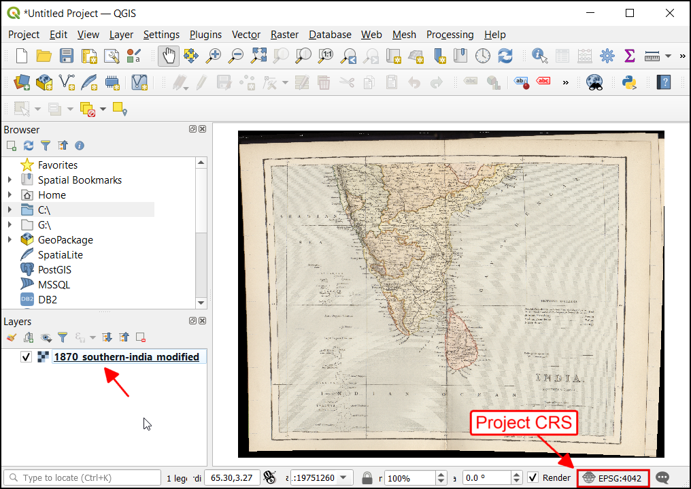
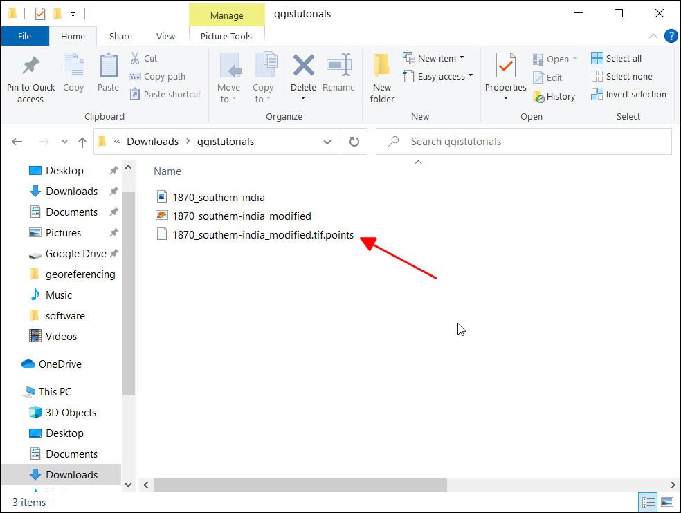

Ujaval Gandhi
Ujaval GandhiGeoreferenciranje topografskih listova i skeniranih mapa (QGIS3)¶
Većina GIS projekata zahteva georeferenciranje nekih rasterskih podataka. Georeferenciranje je proces dodeljivanja koordinata iz stvarnog sveta svakom pikselu rastera. Mnogo puta se ove koordinate dobijaju terenskim istraživanjem - prikupljanjem koordinata pomoću GPS uređaja za nekoliko lako prepoznatljivih karakteristika na slici ili mapi. U nekim slučajevima, kada želite da digitalizujete skenirane mape, možete dobiti koordinate iz oznaka na samoj slici mape. Koristeći ove primere koordinata ili GCP-ove (Grumene kontrolne tačke), slika se iskrivljuje i prilagođava izabranom koordinatnom sistemu. U ovom tutorijalu ću razmotriti koncepte, strategije i alate unutar QGIS-a za postizanje georeferenciranja visoke preciznosti.
Ovaj tutorijal je za georeferenciranje slike koja ima dostupne informacije o koordinatama na samoj slici mape (tj. mreže sa oznakama). Ako vaša izvorna slika nema takve informacije, možete koristiti metod opisan u Georeferenciranje aerosnimaka (QGIS3)
Pregled zadataka¶
Koristićemo skeniranu mapu južne Indije iz 1870. godine i georeferencirati je pomoću QGIS-a.
Druge veštine koje ćete naučiti¶
Kako odrediti datum i koordinatni sistem za stare karte.
Sačuvajte kreirani GCP.
Uredite kreirani GCP za fino podešavanje.
Dobijte podatke¶
Veb-sajt „Hipkisove skenirane stare mape <http://www.hipkiss.org/data/maps.html>“ ima odličnu kolekciju skeniranih mapa koje nisu zaštićene autorskim pravima i koje se mogu koristiti za istraživanje.
Preuzmite mapu južne Indije iz 1870. <http://www.hipkiss.org/data/maps/william-mackenzie_gallery-of-geography_1870_southern-india_3975_3071_600.jpg>`_ i sačuvajte je kao JPG sliku na čvrstom disku.
Radi lakšeg snalaženja, možete direktno preuzeti kopiju skupa podataka sa linka ispod:
Procedura¶
Otvorite QGIS i kliknite na da biste otvorili alat.
Белешка
Od QGIS verzija 3.26 pa nadalje, Georeferencer se može pokrenuti iz .

Georeferencer je podeljen na 2 dela. Gornji deo gde će biti prikazana slika i donji deo gde će se pojaviti tabela koja prikazuje vaše GCP-ove.
Sada ćemo otvoriti našu JPG sliku. Idite na . Potražite preuzetu sliku skenirane mape i kliknite na Open.

Videćete da će se slika učitati u gornjem delu. Možete koristiti kontrole za zumiranje/pomeranje u traci sa alatkama da biste saznali više o mapi.

Sada treba da dodelimo koordinate nekim tačkama na ovoj mapi. Ako pažljivo pogledate, videćete koordinatnu mrežu sa oznakama. To su linije mreže geografske širine i dužine.

Pre dodavanja kontrolnih tačaka na terenu (GCP), potrebno je da definišemo podešavanja transformacije. Kliknite na ikonu zupčanika u prozoru za georeferenciranje da biste otvorili dijalog za podešavanja transformacije.

U dijalogu Podešavanja transformacije, izaberite Tip transformacije kao
Polinom 2. Pogledajte QGIS dokumentaciju da biste saznali više o različitim tipovima transformacije i njihovoj upotrebi. Zatim izaberite Metod ponovnog uzorkovanja kaoNajbliži sused. Kliknite na dugme Izaberi CRS pored Ciljni SRS.

Ako georeferencirate skeniranu mapu poput ove, možete dobiti CRS informacije sa same mape. Gledajući našu sliku mape, koordinate su u geografskoj širini/dužini. Nema datih informacija o datumu, pa moramo pretpostaviti odgovarajuće. Pošto je u pitanju Indija i mapa je prilično stara, možemo se kladiti da bi nam datum Everesta iz 1830. dao dobre rezultate. Potražite „everest“ i izaberite CRS sa najstarijom definicijom datuma Everesta (EPSG:4042). Kliknite na OK.

Белешка
Topografski listovi istraživanja Indije, kreirani između 1960. i 2000. godine, koriste sferoid Everesta iz 1956. i datum Indija_nepal. Ako georeferencirate topografske listove istraživanja Indije, možete definisati prilagođeni CRS u QGIS-u sa sledećim parametrima i koristiti ga u ovom koraku. Ova definicija uključuje parametre delta_x, delta_y i delta_z za transformaciju ovog datuma u WGS84. Pogledajte ovu stranicu za više informacija o Indijskom mrežnom sistemu.
+proj=longlat +a=6377301.243 +b=6356100.2284 +towgs84=295,736,257,0,0,0,0 +no_defs
Белешка
Većina mapa se kreira pomoću projektovanog CRS-a. Ako mapa koju pokušavate da georeferencirate koristi projektovani CRS koji vam je poznat, ali su oznake mreža u geografskom CRS-u (geografska širina/dužina), možete koristiti alternativni tok rada da biste minimizirali izobličenja. Umesto korišćenja geografskog CRS-a kao što mi ovde koristimo, možete kreirati vektorsku mrežu u QGIS-u i transformisati je u projektovani CRS koji će se koristiti kao referenca za precizno snimanje koordinata. Pogledajte `ovu stranicu <https://raisedbeaches.net/2018/02/01/georeferencing-in-qgis/>> za više detalja.
Nazovite svoj izlazni raster kao
1870_southern_india_modified.tif. IzaberiteLZWkao Kompresiju. Označite Sačuvaj GCP tačke da biste sačuvali tačke kao zasebnu datoteku za buduću upotrebu. Uverite se da je označena opcija Učitaj u QGIS kada bude gotovo. Kliknite U redu.

Белешка
Nekomprimirane GeoTIFF datoteke mogu biti veoma velike. Zato je njihova kompresija uvek dobra ideja. Više o različitim TIFF opcijama kompresije (LZW, PACKBITS ili DEFLATE) možete saznati u ovom članku.
Sada možemo početi sa dodavanjem kontrolnih tačaka na zemlji (GCP). Kliknite na dugme Dodaj tačku.

Sada postavite krstić na preseke linija mreže i kliknite levim tasterom miša, ovo će u našem slučaju služiti kao osnovna tačka. Pošto su linije mreže označene, možemo odrediti X i Y koordinate tačaka koristeći njih. U iskačućem prozoru unesite koordinate. Zapamtite da je X = geografska dužina, a Y = geografska širina. Kliknite na OK.

Primetićete da tabela GCP sada ima red sa detaljima vašeg prvog GCP-a.

Slično tome, dodajte još GCP-ova koji pokrivaju celu sliku. Što više tačaka imate, to je vaša slika preciznije registrovana na ciljne koordinate. Transformacija „Polinom 2“ zahteva najmanje 6 GCP-ova. Kada dodate minimalni broj tačaka potreban za transformaciju, primetićete da GCP-ovi sada imaju vrednosti greške „dX“, „dY“ i „Residual“ koje nisu nule. Ako određeni GCP ima neuobičajeno visoke vrednosti greške, to obično znači ljudsku grešku pri unosu vrednosti koordinata. Dakle, možete izbrisati taj GCP i ponovo ga snimiti. Takođe možete izmeniti vrednosti koordinata u GCP tabeli klikom na ćeliju u koloni Dest. X ili Dest. Y.

Kada ste zadovoljni sa GCP-ovima, kliknite na dugme Pokreni georeferenciranje. Ovo će pokrenuti proces iskrivljavanja slike pomoću GCP-ova i kreiranja ciljnog rastera.

Kada se proces završi, videćete georeferencirani sloj učitan u QGIS-u. Georeferenciranje je sada završeno. Takođe, primetićete da je Project CRS u donjem desnom uglu podešen na EPSG:4042 kao što je opisano u Podešavanjima transformacije.

Prevucite i ispustite „OpenStreetMap“ kao osnovnu mapu iz padajućeg menija XYZ Tiles na dnu panela pregledača da biste proverili georeferencirani sloj. Da biste podesili transparentnost, kliknite na ikonu Otvori panel za stilizovanje sloja i izaberite karticu Transparentnost. Podesite transparentnost na „40 %``. Sada georeferencirana slika mora da se preklapa sa obrisom osnovne mape.

Ako je potrebno dodatno precizno podešavanje georeference, možemo početi od prikupljenih GCP tačaka. Pregledajte lokaciju datoteke
1870_southern_india_modified.tif. Možete pronaći dodatnu datoteku,1870_southern_india_modified.tif.points. Ova datoteka će sadržati informacije o GCP tačkama.

Otvorite alatku za georeferenciranje u QGIS-u, kliknite na i izaberite
1870_southern_india_modified.tif.points. Ovo će učitati prethodno kreiranu GCP tačku. Zatim učitajte1870_southern_india_modified.tifda biste precizno podesili svoj rad.

{kind=link}
{kind=link}
If you want to give feedback or share your experience with this tutorial, please comment below. (requires GitHub account)